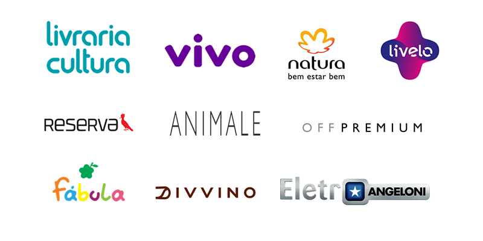

Overview OCC - Da teoria ao fluxo de criação de widgets
Tobias Rocha da Rosa
Olá, eu sou o Tobias

- Desenvolvedor front-end +- 8 anos
- Trabalho na compasso há 4 anos
- Trabalho com OCC há 2 anos
Projetos que já trabalhei na Compasso
Roteiro do webinar
- A Plataforma OCC - Conceitos
- Como funciona o front end no OCC
- Fluxo de criação de widgets
- Criando um layout de página e instanciando widgets
- Fluxo de manutenção de widgets
Perguntas e participações são bem-vindas!
A Plataforma OCC (CX Commerce)
O Oracle Commerce Cloud é uma solução de comércio de SaaS extensível e abrangente que oferece suporte aos modelos B2C e B2B em uma plataforma unificada.
Alguns dos serviços disponibilizados
- É uma ferramenta que permite multi-sites, multi-catálogos, multi-listas de preço e multi-moedas
- Pode comportar implementações B2B, B2C e marketplaces, simultaneamente.
- O Conteúdo pode ser gerenciado livremente através do uso de widgets.
- Possui nativamente funcionalidades de teste AB, BI e uma camada de pré-visualização (preview) em cada ambiente.
Como funciona a camada front end no OCC
- API First: Toda a funcionalidade é acessível através de serviços REST.
- A aplicação é baseada numa SPA que utiliza o framework KnockoutJS.
- Os layouts são construídos através de widgets.
- Tecnologias envolvidas: KnockoutJS, RequireJS, LESS, HTML5, CSS3, JS(ES5).
Fluxo de criação de widgets
- Criar extensão
- Preparar arquivos de pré instalação
- Zipar arquivos
- Enviar zip para OCC
Criando um layout de página e instanciando widgets
- Acessar o menu design - layouts.
- Copiar um layout padrão e fazer as configurações necessárias.
- Instanciar widgets (drag and drop).
Fluxo de manutenção de widgets
O OCC possui um Design Code Utility, que é um conjunto de ferramentas de linha de comando que permite integrar o Commerce Cloud à uma IDE ou editor de código.
- DCU - Utilitário principal de sincronização de código.
- CCPROXY - O proxy de desenvolvimento e depuração.
- CCW - O Assistente para criação de conteúdo.
Perguntas
Obrigado!
Email: tobias.rosa@compasso.com.br
Skype: tobias_rocha101@hotmail.com